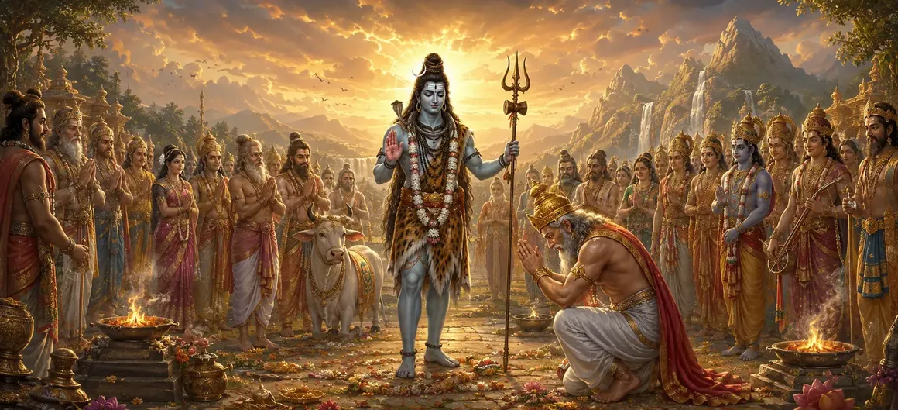

दक्ष के यज्ञ का विध्वंस - भाग 4
वायवीय संहिता का तेईसवां अध्याय दक्ष के बलिदान की महाकाव्य कथा को उसके गहन निष्कर्ष पर लाता है, जो अनुग्रह और मुक्ति पर प्रकाश डालता है।
ऋषि वायु बताते हैं कि कैसे सच्चा पश्चाताप दिव्य क्षमा और सार्वभौमिक संतुलन की अंतिम बहाली की ओर ले जाता है।
यह अध्याय इस पौराणिक टकराव के गौरवशाली अंतिम अध्याय के रूप में कार्य करता है।
अध्याय 23 की मुख्य बातें
ईमानदारी से पश्चाताप
दक्ष के परमात्मा के समक्ष पूर्ण समर्पण और पश्चाताप पर प्रकाश डाला गया है।
ईश्वरीय कृपा
यह भगवान शिव की असीम करुणा और क्षमा करने की तत्परता का उदाहरण है।
व्यवस्था की बहाली
अखाड़े की शांति और सद्भाव की पुनः स्थापना का विवरण।
दक्ष का परिवर्तन
यह दर्शाता है कि विनम्र राजा को सच्चा ज्ञान और भक्ति प्राप्त हो रही है।
लौकिक सुलह
दैवीय सत्ता और नश्वर गौरव के बीच संघर्ष को समाप्त करता है।
परिवर्तन आगे
मंदार पर्वत पर भगवान शिव की दिव्य क्रीड़ाओं की कथा तैयार करते हैं।
इस अध्याय में मुख्य विषय
दक्ष का घोर पश्चाताप और समर्पण
दैवीय शक्ति के जबरदस्त प्रदर्शन और अपने गलत अनुष्ठान के विनाश से विनम्र होकर, राजा दक्ष ने अपना अहंकार पूरी तरह से त्याग दिया।
हाथ जोड़कर और पश्चाताप से भारी मन से, उन्होंने भगवान शिव के प्रति अपनी हार्दिक क्षमायाचना और पूर्ण समर्पण प्रस्तुत किया।
भगवान शिव की कृपा का प्रकटीकरण
अपने विशेषण 'आशुतोषे' (आसानी से प्रसन्न होने वाले) के अनुरूप, भगवान शिव स्थायी क्रोध के बजाय असीम करुणा के साथ प्रकट हुए।
उन्होंने दक्ष के पश्चाताप को स्वीकार कर लिया, जिससे साबित हुआ कि सच्ची भक्ति और समर्पण पिछले सभी अपराधों को नष्ट कर देते हैं।
पवित्र अनुष्ठान की पुनर्स्थापना
दैवीय मार्गदर्शन के तहत, बाधित यज्ञ को उचित रूप से संशोधित किया गया और भगवान शिव के प्रति उचित श्रद्धा के साथ पूरा किया गया।
भाग लेने वाले सभी देवताओं को उनका उचित हिस्सा प्राप्त हुआ, और अनुष्ठान ने अपना वास्तविक आध्यात्मिक उद्देश्य प्राप्त किया।
दक्ष का आध्यात्मिक परिवर्तन
दक्ष एक अहंकारी राजा से परम भगवान के वास्तविक स्वरूप को समझकर एक समर्पित भक्त में बदल गए।
उनका पुनर्स्थापित जीवन इस बात का उदाहरण बन गया कि कैसे विनम्रता के साथ मिलने पर अनुग्रह सबसे बड़ी त्रुटियों को भी दूर कर देता है।
विश्व सद्भाव की पुनः स्थापना
संघर्ष के समाधान के साथ, तीनों लोकों में शांति लौट आई और ब्रह्मांडीय व्यवस्था पूरी तरह से फिर से स्थापित हो गई।
ऋषियों और देवताओं ने भगवान शिव की सर्वोच्च दया और सार्वभौमिक कानूनों की सामंजस्यपूर्ण बहाली की प्रशंसा की।
दक्ष प्रसंग का उपसंहार
भाग 4 दक्ष के बलिदान की कथा का एक शानदार समापन करता है, जो गर्व और समर्पण के बारे में शाश्वत आध्यात्मिक पाठ को मजबूत करता है।
कथा दिव्य इतिहास के अगले चरण में सुचारू रूप से परिवर्तित हो जाती है।
माउंट मंदारा स्पोर्ट्स में परिवर्तन
दक्ष के यज्ञ का विनाश और प्रायश्चित पूरा करने के बाद, ऋषि वायु मंदरा पर्वत पर शिव की दिव्य क्रीड़ाओं का वर्णन करने के लिए तैयार होते हैं।
आगामी अनुभाग दिव्य लोकों में भगवान शिव की आनंददायक और उत्कृष्ट दिव्य लीलाओं का पता लगाता है।
अध्याय 23 की मुख्य शिक्षाएँ
अनुग्रह का उद्धार
सच्चा पश्चाताप भगवान शिव की असीम दया का द्वार खोलता है।
सुलह
दैवीय सुधार अंततः सद्भाव और आपसी समझ की ओर ले जाता है।
विनम्रता की जीत
अहंकार को सर्वोच्च के समक्ष प्रस्तुत करने से आध्यात्मिक उत्थान और शांति मिलती है।
सार्वभौमिक व्यवस्था
पवित्र अनुष्ठान भगवान शिव के प्रति श्रद्धा से ही पूर्ण होते हैं।
परिवर्तनकारी शक्ति
सच्ची भक्ति से गहन त्रुटियों से भी पार पाया जा सकता है।
नये क्षितिज
मंदरा पर्वत पर भगवान शिव की दिव्य क्रीड़ाओं की खोज का मार्ग प्रशस्त हुआ।
आध्यात्मिक चिंतन
दक्ष के बलिदान का निष्कर्ष हमें सिखाता है कि भगवान शिव केवल कठोर न्याय की शक्ति नहीं हैं, बल्कि असीम करुणा के सागर हैं; जब अभिमान समर्पण की ओर झुकता है, तो अनुग्रह हमारे जीवन को पूरी तरह से बदल देता है।
अध्याय 23 का संदेश जीना
अपने व्यक्तिगत संबंधों में क्षमा और मेल-मिलाप को अपनाएँ।
व्यक्तिगत संघर्षों और अहंकार पर काबू पाने के लिए ईश्वरीय इच्छा के प्रति समर्पण का अभ्यास करें।
भक्ति और चिंतन के माध्यम से ज्ञान और आंतरिक परिवर्तन की तलाश करें।
प्रमुख आध्यात्मिक अवधारणाएँ
राजा दक्ष को दिव्य क्षमा और कृपा की प्राप्ति
भगवान शिव की असीम करुणा और सहज कृपा।
पवित्र अनुष्ठान का सफल एवं सौहार्दपूर्ण समापन।
अहंकार का शुद्ध भक्ति में आध्यात्मिक परिवर्तन।
पूरे ब्रह्मांड में शांति और व्यवस्था की पुनः स्थापना।
मंदरा पर्वत पर भगवान शिव की दिव्य क्रीड़ा में परिवर्तन।
अध्याय सारांश
वायवीय संहिता अध्याय 23 प्रस्तुत करता है दक्ष के बलिदान का विनाश - भाग 4। दक्ष के गंभीर पश्चाताप, भगवान शिव की असीम कृपा, बलिदान व्यवस्था की बहाली और सार्वभौमिक सद्भाव पर प्रकाश डालते हुए, यह अध्याय दक्ष प्रकरण को गहराई से समाप्त करता है। यह पाठक को अगले कथा चरण के लिए तैयार करता है: मंदरा पर्वत पर शिव की दिव्य क्रीड़ाएँ।
अक्सर पूछे जाने वाले प्रश्न
1. वायवीय संहिता अध्याय 23 का प्राथमिक विषय क्या है?
अध्याय 23 में प्रकरण के अंतिम समाधान, राजा दक्ष को दी गई कृपा और ब्रह्मांडीय सद्भाव की बहाली का विवरण दिया गया है।
2. इस अंतिम भाग में राजा दक्ष को मुक्ति कैसे मिलती है?
वास्तविक पश्चाताप, समर्पण और भगवान शिव की असीम दया के माध्यम से, दक्ष को रूपांतरित किया गया और पुनर्स्थापना प्रदान की गई।
3. निष्कर्ष में यज्ञ क्षेत्र का क्या होता है?
अराजक क्षेत्र को शांत किया जाता है, और अंततः उचित श्रद्धा स्थापित की जाती है, जो सच्ची आध्यात्मिक व्यवस्था की विजय का प्रतीक है।
4. इस अध्याय को भाग 4 के रूप में क्यों नामित किया गया है?
यह दक्ष के बलिदान के विनाश और मोचन को कवर करने वाले बहु-भागीय कथा संग्रह के अंतिम चौथे भाग के रूप में कार्य करता है।
5. दक्ष की कहानी का निष्कर्ष क्या आध्यात्मिक शिक्षा देता है?
यह सिखाता है कि सर्वोच्च भगवान के प्रति समर्पण के साथ सच्चा पश्चाताप परम अनुग्रह और क्षमा लाता है।
6. अध्याय 23 के बाद नेविगेशन के लिए अगला अध्याय कौन सा है?
नेविगेशन के अगले अध्याय का शीर्षक 'मंदरा पर्वत पर शिव की दिव्य क्रीड़ा' है।
"जब सच्चे पश्चाताप में अहंकार समर्पण कर देता है, तो क्रोध का तूफान दैवीय कृपा के सागर में पिघल जाता है।"
वायवीय संहिता के माध्यम से जारी रखें
अध्याय 23 दक्ष के बलिदान के विनाश का समापन करता है। मंदरा पर्वत पर शिव की दिव्य क्रीड़ा जारी रखें।